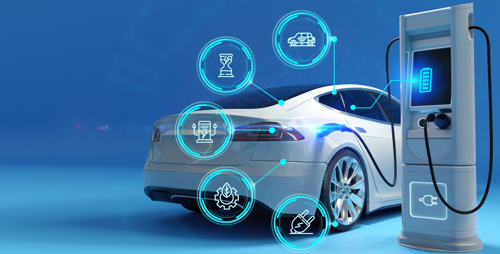
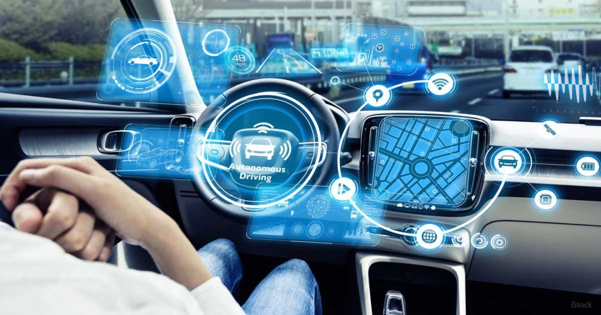
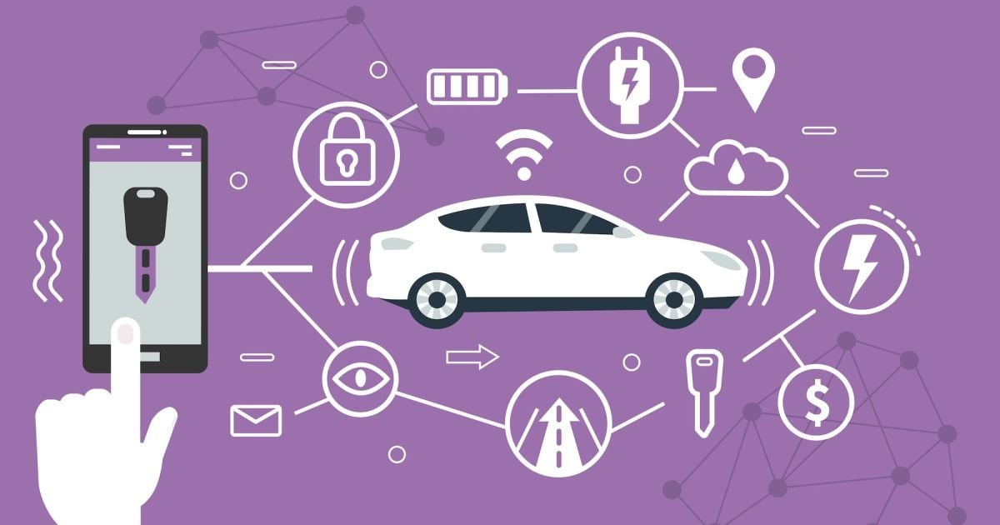
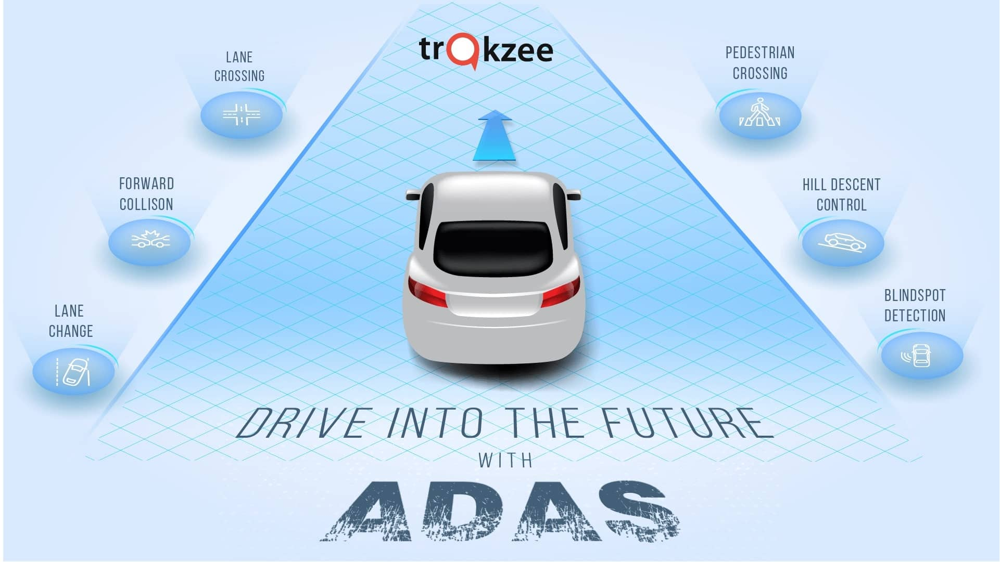
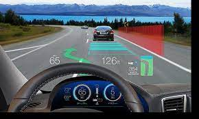

As of my last update in September 2021, I can provide a brief introduction to the future of automotive technology. Please
note that advancements and developments might have occurred since then.
The automotive industry has been undergoing rapid and transformative changes, driven by technological innovations, changing
consumer demands, and environmental concerns. The future of automotive technology is poised to revolutionize how we perceive
and interact with vehicles. Some key areas of development include:
Electric Vehicles (EVs)
Electric Vehicles (EVs) are a revolutionary development in the automotive industry, representing a significant shift towards
sustainable transportation. Unlike traditional internal combustion engine (ICE) vehicles, EVs are powered by electricity, usually
stored in advanced rechargeable batteries. These vehicles have gained immense popularity in recent years due to their environmental
benefits, reduced reliance on fossil fuels, and advancements in automotive technology.
The future of EVs and automotive technology is exciting and full of promise. Here are some anticipated developments:
-
Increased Adoption: As battery costs continue to decline, EVs are expected to become more affordable, leading to
widespread adoption. Many countries are also setting ambitious targets to phase out internal combustion engine
vehicles and promote the use of electric vehicles.
-
Range and Charging Speed: Ongoing research and development will likely lead to even more advanced batteries that
offer longer ranges and faster charging times. Ultra-fast charging technologies are being explored to rival the
refueling speed of conventional vehicles.
-
Sustainability and Recycling: Manufacturers are focusing on making EVs more sustainable throughout their lifecycle,
from production to recycling. This includes sourcing materials responsibly and developing efficient recycling methods
for batteries.
-
Integration of Renewable Energy: EVs can be integrated into the power grid as mobile energy storage units,
allowing them to supply power during peak demand or when renewable energy sources are not available.
-
Autonomous Electric Fleets: Self-driving technology is progressing rapidly, and autonomous electric fleets for ride-sharing and
delivery services are likely to become more common, further reducing emissions and enhancing transportation efficiency.
Electric vehicles have already made a significant impact on the automotive industry, and their future is bright. With
continued advancements in technology, infrastructure, and supportive policies, EVs are poised to play a central role in creating
a more sustainable and efficient transportation ecosystem.

Autonomous Vehicles (AVs)
Autonomous Vehicles (AVs), also known as self-driving cars or driverless cars, are a revolutionary development in the automotive
industry. These vehicles are equipped with advanced sensors, cameras, and artificial intelligence (AI) systems that enable them
to navigate and operate without human intervention. AVs have the potential to transform transportation, offering improved safety,
increased efficiency, and enhanced mobility.
-
Advancements in AI: Continued progress in AI research and deep learning algorithms will lead to more sophisticated
and capable AVs. AI will play a crucial role in improving decision-making, learning from complex scenarios, and
handling various driving conditions.
-
Regulatory Framework: Establishing comprehensive regulations and standards for AVs is essential to ensure safety
and manage potential risks. Governments worldwide are actively working on frameworks to govern the deployment and
operation of autonomous vehicles.
-
Connectivity and V2X Communication: Vehicle-to-Everything (V2X) communication will become more prevalent, enabling
AVs to exchange data with other vehicles, pedestrians, and infrastructure. This connectivity will enhance safety,
efficiency, and traffic management.
-
Ethical and Social Considerations: The deployment of AVs raises ethical dilemmas, such as decision-making in critical
situations. Addressing these concerns will be crucial to gain public acceptance and trust in autonomous technology.
-
Public Acceptance: Widespread adoption of AVs will depend on public acceptance and confidence in their safety and
reliability. Education and positive experiences with early AV deployments will be vital in shaping public perceptions.
Autonomous vehicles represent a transformative force in the automotive industry and the future of transportation. As technology
continues to advance, AVs hold the promise of safer, more efficient, and accessible mobility for people around the world. However,
their successful integration into society will require collaboration between governments, industry stakeholders, and the public
to address technical, regulatory, and societal challenges.

Connectivity and IoT
Connectivity and the Internet of Things (IoT) are rapidly reshaping the future of automotive technology, transforming vehicles
into sophisticated, smart, and interconnected machines. By integrating vehicles with various communication technologies and IoT
devices, the automotive industry is entering an era of enhanced safety, convenience, and efficiency.
-
5G Connectivity: The deployment of 5G networks will revolutionize connectivity in vehicles, offering faster and
more reliable communication, enabling real-time data exchange and supporting more advanced connected vehicle applications.
-
Vehicle-to-Everything (V2X) Communication: V2X communication will become more prevalent, allowing vehicles to
exchange data not only with each other but also with pedestrians, traffic signals, and other infrastructure elements.
This will improve safety, efficiency, and traffic management.
-
Autonomous Vehicle Integration: IoT connectivity will be integral to the successful deployment of autonomous vehicles.
AVs will rely on real-time data from various sources to make informed decisions and navigate safely through complex
environments.
-
Mobility as a Service (MaaS): IoT-enabled connectivity will play a vital role in the growth of MaaS, where users
can access transportation services on-demand, choosing from various modes of transport, including autonomous
vehicles, public transit, and ride-sharing options.
connectivity and the Internet of Things are driving automotive technology into an era of unprecedented innovation and
possibilities. As vehicles become more interconnected, the driving experience will evolve, with increased safety, improved
efficiency, and a wide array of personalized services. Embracing these advancements responsibly will be crucial to unlocking
the full potential of connected vehicles while addressing concerns related to security, privacy, and sustainability.

Advanced Driver Assistance Systems (ADAS)
Advanced Driver Assistance Systems (ADAS) are a pivotal component of the rapidly evolving automotive technology landscape.
ADAS technologies use sensors, cameras, and sophisticated algorithms to assist drivers in various aspects of driving, enhancing
safety, comfort, and convenience. These systems are a stepping stone towards fully autonomous vehicles and represent a significant
leap forward in automotive innovation.
-
Increasing Adoption: As technology improves and costs decrease, ADAS features will become more prevalent in new
vehicles, making roadways safer and reducing the number of accidents.
-
Integration with Autonomous Driving: ADAS is a crucial stepping stone towards fully autonomous vehicles. As technology
advances, more advanced ADAS capabilities will enable a seamless transition to higher levels of autonomy.
-
Sensor Fusion: Future ADAS systems will rely on sensor fusion, combining data from various sensors like cameras,
LiDAR, radar, and ultrasonic sensors to create a comprehensive and accurate view of the vehicle's surroundings.
-
V2X Communication: ADAS will benefit from Vehicle-to-Everything (V2X) communication, where vehicles can exchange
data with other vehicles and infrastructure elements. This will enhance the system's ability to anticipate potential
hazards and optimize traffic flow.
Advanced Driver Assistance Systems are transforming the automotive industry by making driving safer and more efficient.
As technology continues to evolve, ADAS will pave the way for a future with increasingly autonomous vehicles, enhancing mobility
and revolutionizing transportation on a global scale. The ongoing development and integration of ADAS into vehicles
underscore the commitment of the automotive industry to create a safer and more connected driving experience.

Augmented Reality (AR) and Heads-Up Displays (HUD)
Augmented Reality (AR) and Heads-Up Displays (HUD) are cutting-edge technologies that hold significant promise for the future
of automotive technology. These technologies enhance the driving experience by overlaying digital information onto the real-world
environment, providing drivers with valuable insights and improving safety, navigation, and overall driving efficiency.
-
Advanced Visualization: Future AR and HUD systems will offer even more advanced visualizations, such as highlighting
road lanes, traffic signs, and potential obstacles, further enhancing driver awareness and safety.
-
Integration with ADAS and Autonomous Driving: AR and HUD technologies will integrate seamlessly with Advanced Driver
Assistance Systems (ADAS) and autonomous driving features, providing drivers with vital information and updates
during automated driving modes.
-
Personalization: AR and HUD systems will become more personalized, allowing drivers to customize the displayed
information based on their preferences and driving habits.
-
Enhanced Connectivity: As vehicles become more connected, AR and HUD technologies will have access to real-time
data from the cloud and other vehicles, enabling more comprehensive and accurate information for drivers.
-
Integration with Wearable Devices: AR and HUD systems may extend to wearable devices like smart glasses, enabling
drivers to access information even outside the vehicle, enhancing the overall mobility experience.
-
Virtual Showrooms and User Manuals: AR can be used in virtual showrooms to provide customers with interactive
experiences, allowing them to explore vehicle features and options. AR can also be utilized for user manuals,
making it easier for owners to troubleshoot and perform basic maintenance tasks.
Augmented Reality and Heads-Up Displays are poised to revolutionize the driving experience by providing drivers with
real-time, contextually relevant information without distracting them from the road. These technologies will play a crucial role
in enhancing road safety, navigation, and vehicle connectivity in the future of automotive technology, offering an exciting glimpse
into the potential of augmented driving.

As these technologies continue to advance, the future of automotive technology holds the promise of safer, more efficient, and eco-friendly
transportation options that will reshape the way we travel and interact with vehicles. However, challenges related to infrastructure, regulations,
data privacy, and consumer acceptance will need to be addressed for a smooth transition into this futuristic automotive landscape.